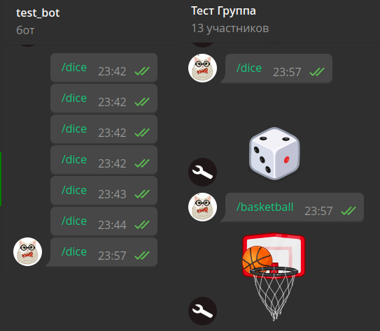

过滤器与中间件¶
使用的 aiogram 版本：3.14.0
现在是时候了解 aiogram 3.x 中过滤器和中间件的工作方式了，同时认识框架的"lambda 表达式杀手"— 魔法过滤器。
过滤器¶
为什么需要过滤器？¶
如果您已经写了第一个机器人，我为您祝贺：您已经在使用过滤器了，
只是那些是内置过滤器。是的，就是那个 Command("start") 就是一个过滤器。过滤器的目的是让来自 Telegram 的下一个更新
进入正确的处理器，也就是[期望]它的地方。
让我们看一个最简单的例子来理解过滤器的重要性。假设我们有用户 Alice（ID 111） 和 Bob（ID 777）。有一个机器人，对任何文本消息都会用一些激励短语让这两个人开心，而其他人则被拒绝：
from random import choice
@router.message(F.text)
async def my_text_handler(message: Message):
phrases = [
"Привет! Отлично выглядишь :)",
"Хэллоу, сегодня будет отличный день!",
"Здравствуй)) улыбнись :)"
]
if message.from_user.id in (111, 777):
await message.answer(choice(phrases))
else:
await message.answer("Я с тобой не разговариваю!")
然后在某个时刻，我们决定为这两个人中的每一个都提供更个性化的问候， 所以我们将处理器分成三个：一个给 Alice，一个给 Bob，一个给其他人：
@router.message(F.text)
async def greet_alice(message: Message):
# print("Хэндлер для Алисы")
phrases = [
"Привет, {name}. Ты сегодня красотка!",
"Ты самая умная, {name}",
]
if message.from_user.id == 111:
await message.answer(
choice(phrases).format(name="Алиса")
)
@router.message(F.text)
async def greet_bob(message: Message):
phrases = [
"Привет, {name}. Ты самый сильный!",
"Ты крут, {name}!",
]
if message.from_user.id == 777:
await message.answer(
choice(phrases).format(name="Боб")
)
@router.message(F.text)
async def stranger_go_away(message: Message):
if message.from_user.id not in (111, 777):
await message.answer("Я с тобой не разговариваю!")
在这种情况下，Alice 会收到消息并开心。但其他人都不会收到任何消息，因为
代码总是会进入 greet_alice() 函数，没有通过内部条件 if message.from_user.id == 111。
您可以通过取消注释 print() 调用来轻松验证这一点。
但为什么会这样呢？答案很简单：任何文本消息首先都会通过
greet_alice() 函数上的 F.text 检查，这个检查会返回 True，更新就会进入这个函数，
然后没有通过内部条件 if，就会退出并消失。
为了避免这样的情况，存在过滤器。实际上，正确的检查应该是 "文本消息且用户 ID 为 111"。那么当 ID 为 777 的 Bob 给机器人写消息时，过滤器的组合 会返回 False，路由器就会检查下一个处理器，其中两个过滤器都返回 True，更新就会进入该处理器。 乍一看，上面描述的内容听起来非常复杂，但到本章结束时，您将了解如何正确组织这样的检查。
过滤器作为类¶
与 aiogram 2.x 不同，在"3"中没有针对特定聊天类型的过滤器类 ChatTypeFilter （私聊、群组、超级群组或频道）。让我们自己写一个。允许用户指定所需的类型 要么是字符串，要么是列表（list）。后者在我们同时对多种类型感兴趣时很有用， 例如群组和超级群组。
我们的应用入口点，即 bot.py 文件，看起来很熟悉：
import asyncio
from aiogram import Bot, Dispatcher
async def main():
bot = Bot(token="TOKEN")
dp = Dispatcher()
# 启动机器人并跳过所有累积的传入消息
# 是的，即使你使用轮询也可以调用此方法
await bot.delete_webhook(drop_pending_updates=True)
await dp.start_polling(bot)
if __name__ == "__main__":
asyncio.run(main())
在它旁边创建一个 filters 目录，在其中创建文件 chat_type.py：
from typing import Union
from aiogram.filters import BaseFilter
from aiogram.types import Message
class ChatTypeFilter(BaseFilter): # [1]
def __init__(self, chat_type: Union[str, list]): # [2]
self.chat_type = chat_type
async def __call__(self, message: Message) -> bool: # [3]
if isinstance(self.chat_type, str):
return message.chat.type == self.chat_type
else:
return message.chat.type in self.chat_type
让我们注意标记的行：
- 我们的过滤器继承自基类
BaseFilter - 在类的构造函数中，可以设置未来的过滤器参数。在这个例子中，我们声明有一个
参数
chat_type，它可以是字符串（str）或列表（list）。 - 所有的操作都在
__call__()方法中进行，当类的实例ChatTypeFilter()被作为函数调用时触发。 内部没有什么特别的：检查传入对象的类型并调用相应的检查。 我们的目标是让过滤器返回一个布尔值，因为之后只有所有过滤器都返回True的处理器才会执行。
现在让我们写一对处理器，它们对 /dice 和 /basketball 命令
发送相应类型的骰子，但只在群组中。创建文件 handlers/group_games.py 并写一些基本代码：
from aiogram import Router
from aiogram.enums.dice_emoji import DiceEmoji
from aiogram.types import Message
from aiogram.filters import Command
from filters.chat_type import ChatTypeFilter
router = Router()
@router.message(
ChatTypeFilter(chat_type=["group", "supergroup"]),
Command(commands=["dice"]),
)
async def cmd_dice_in_group(message: Message):
await message.answer_dice(emoji=DiceEmoji.DICE)
@router.message(
ChatTypeFilter(chat_type=["group", "supergroup"]),
Command(commands=["basketball"]),
)
async def cmd_basketball_in_group(message: Message):
await message.answer_dice(emoji=DiceEmoji.BASKETBALL)
让我们理解一下。
首先，我们导入了内置过滤器 Command 和我们自己写的
ChatTypeFilter。
其次，我们将过滤器作为位置参数传递给装饰器，指定
所需的聊天类型。
第三，在 aiogram 2.x 中您习惯于将命令过滤为 commands=...，但在 aiogram 3 中已经没有这样了，
正确的做法是使用与自己的过滤器相同的方式使用内置过滤器，通过导入和调用相应的类。
我们在第二个装饰器中看到了这个，它调用 Command(commands="somecommand") 或简短地：Command("somecommand")
剩下的是将处理器文件导入到入口点并将新路由器连接到分派器（新行已突出显示）：
import asyncio
from aiogram import Bot, Dispatcher
from handlers import group_games
async def main():
bot = Bot(token="TOKEN")
dp = Dispatcher()
dp.include_router(group_games.router)
# 启动机器人并跳过所有累积的传入消息
# 是的，即使你使用轮询也可以调用此方法
await bot.delete_webhook(drop_pending_updates=True)
await dp.start_polling(bot)
if __name__ == "__main__":
asyncio.run(main())
让我们检查一下：

一切似乎都很好，但如果我们有不是 2 个处理器而是 10 个呢？我们必须为每一个指定我们的 过滤器，并且不要忘记任何一个。幸运的是，过滤器可以直接连接到路由器上！在这种情况下，检查 将在更新到达此路由器时执行一次。这可能很有用， 如果在过滤器中你做一些不同的"重操作"，比如调用 Bot API；否则你很容易 遇到速率限制。
这是我们的骰子处理器文件的最终版本：
from aiogram import Router
from aiogram.enums.dice_emoji import DiceEmoji
from aiogram.filters import Command
from aiogram.types import Message
from filters.chat_type import ChatTypeFilter
router = Router()
router.message.filter(
ChatTypeFilter(chat_type=["group", "supergroup"])
)
@router.message(Command("dice"))
async def cmd_dice_in_group(message: Message):
await message.answer_dice(emoji=DiceEmoji.DICE)
@router.message(Command("basketball"))
async def cmd_basketball_in_group(message: Message):
await message.answer_dice(emoji=DiceEmoji.BASKETBALL)
实际上，这样的聊天类型过滤器可以略微不同地实现。尽管
我们有四种聊天类型（私聊、群组、超级群组、频道），但 message 类型的更新
不能来自频道，因为它们有自己的更新类型 channel_post。当我们
过滤群组时，通常不在乎是普通群组还是超级群组，只要不是私聊。
因此，过滤器本身可以简化为条件性的 ChatTypeFilter(is_group=True/False)
并简单地检查是私聊还是不是。具体的实现留给读者自行决定。
除了 True/False，过滤器还可以向通过过滤器的处理器传递一些东西。这在 我们不想在处理器中处理消息时很有用，因为我们已经在过滤器中处理过了。为了 变得清楚，让我们写一个过滤器，如果消息中有用户名，它会通过消息，同时 "推送"找到的值到处理器中。
在 filters 目录中创建新文件 find_usernames.py：
from typing import Union, Dict, Any
from aiogram.filters import BaseFilter
from aiogram.types import Message
class HasUsernamesFilter(BaseFilter):
async def __call__(self, message: Message) -> Union[bool, Dict[str, Any]]:
# 如果根本没有 entities，将返回 None，
# 在这种情况下，我们认为这是一个空列表
entities = message.entities or []
# 检查任何用户名并使用
# extract_from() 方法从文本中提取它们。详见
# 关于处理消息的章节
found_usernames = [
item.extract_from(message.text) for item in entities
if item.type == "mention"
]
# 如果找到了用户名，那么将其"推送"到处理器
# 使用"usernames"键名
if len(found_usernames) > 0:
return {"usernames": found_usernames}
# 如果没有找到任何用户名，返回 False
return False
并创建带有处理器的新文件：
from typing import List
from aiogram import Router, F
from aiogram.types import Message
from filters.find_usernames import HasUsernamesFilter
router = Router()
@router.message(
F.text,
HasUsernamesFilter()
)
async def message_with_usernames(
message: Message,
usernames: List[str]
):
await message.reply(
f'Спасибо! Обязательно подпишусь на '
f'{", ".join(usernames)}'
)
如果找到至少一个用户名，HasUsernamesFilter 过滤器不会只返回 True，而是
返回一个字典，其中提取的用户名在 usernames 键下。相应地，在这个
过滤器被应用的处理器中，你可以在函数处理器中添加一个同名的参数。瞧！
现在不需要再次解析整个消息并再次提取用户名列表：

魔法过滤器¶
看了前一部分的 ChatTypeFilter 之后，有些人可能会喊：
"为什么要这么复杂，如果可以直接用 lambda：
lambda m: m.chat.type in ("group", "supergroup")"？而你是对的！确实，对于一些
简单的情况，当你只需要检查对象字段的值时，创建单独的
过滤器文件、然后导入它，意义不大。
aiogram 的创始人兼主要开发者 Alex 写了
magic-filter 库，
实现动态获取对象属性值（某种程度上的 getattr 的最大化）。更重要的是，它已经与 aiogram 3.x 一起提供。
如果你安装了"3"，那么你已经安装了 magic-filter。
magic-filter 库也可在 PyPi 上获得，可以独立于 aiogram 在你的其他项目中使用。在 aiogram 中使用 该库时，你将可以访问一个额外的特性，将在本章后面讨论
"魔法过滤器"的功能在 aiogram 文档中相当详细地描述了，这里 我们将重点关注主要部分。
让我们回忆一下什么是消息的"内容类型"。这个概念在 Bot API 中不存在，但在 pyTelegramBotAPI 和 aiogram 中存在。
这个想法很简单：如果在 Message 对象中
photo 字段不为空（即在 Python 中不等于 None），
那么这个消息包含一个图像，因此，我们认为它的内容类型是 photo。而 content_types="photo" 过滤器
将只捕获这样的消息，让开发者不必在处理器内检查这个属性。
现在不难想象，一个用俄语表达为
"传入变量 'm' 的属性 'photo' 不应该等于 None"的 lambda 表达式，用 Python 写出来是
lambda m: m.photo is not None，或者稍微简化一下，lambda m: m.photo。而 m 本身变成
我们过滤的对象。例如，Message 类型的对象。
Magic-filter 提供了类似的东西。为此，你需要从 aiogram 导入 MagicFilter 类，
但我们将其导入不是完整名称，而是单字母别名 F：
from aiogram import F
# 这里 F 代表 message
@router.message(F.photo)
async def photo_msg(message: Message):
await message.answer("Это точно какое-то изображение!")
与旧的 ContentTypesFilter(content_types="photo") 相比，新的 F.photo 很方便！现在，
凭借这样的神圣知识，我们可以轻松用魔法替换 ChatTypeFilter 过滤器：
router.message.filter(F.chat.type.in_({"group", "supergroup"}))。
更进一步，即使对内容类型的检查也可以表示为魔法过滤器：
F.content_type.in_({'text', 'sticker', 'photo'}) 或 F.photo | F.text | F.sticker。
还应该记住，过滤器不仅可以应用于 Message 的处理，也可以应用于任何其他 类型的更新：回调、内联查询、(my_)chat_member 等。
让我们看看 aiogram 3.x 中 magic-filter 的"独有"特性。我们说的是
as_(<some text>) 方法，它允许获取过滤器的结果作为处理器的参数。一个简短的
例子来说明：带有照片的消息中的图像作为数组到达，通常按质量升序排列。相应地，
你可以立即在处理器中获得具有最大尺寸的照片对象：
from aiogram.types import Message, PhotoSize
@router.message(F.photo[-1].as_("largest_photo"))
async def forward_from_channel_handler(message: Message, largest_photo: PhotoSize) -> None:
print(largest_photo.width, largest_photo.height)
一个更复杂的例子。如果消息从匿名群组管理员转发
或从某个频道转发，那么在 Message 对象中会有一个非空的 forward_from_chat 字段，其中包含
Chat 类型的对象。这是一个例子，它只在 forward_from_chat 字段非空时工作，
而在 Chat 对象中 type 字段等于 channel（换句话说，我们排除来自匿名
管理员的转发，只对来自频道的转发作出反应）：
from aiogram import F
from aiogram.types import Message, Chat
@router.message(F.forward_from_chat[F.type == "channel"].as_("channel"))
async def forwarded_from_channel(message: Message, channel: Chat):
await message.answer(f"This channel's ID is {channel.id}")
一个更复杂的例子。使用 magic-filter，你可以检查列表中的元素是否符合某个条件：
from aiogram.enums import MessageEntityType
@router.message(F.entities[:].type == MessageEntityType.EMAIL)
async def all_emails(message: Message):
await message.answer("All entities are emails")
@router.message(F.entities[...].type == MessageEntityType.EMAIL)
async def any_emails(message: Message):
await message.answer("At least one email!")
MagicData¶
最后，让我们简要介绍一下 MagicData。这个过滤器 允许你在过滤方面上升到更高的水平，并操纵通过中间件或 分派器/轮询/网络钩子传入的值。假设你有一个受欢迎的机器人。现在 是时候进行技术维护了：备份数据库、清理日志等。但同时 你不想关闭机器人，以免失去新的用户：让它告诉用户稍等片刻。
一个可能的解决方案是创建一个特殊的路由器，在某种方式
向机器人传入一个等于 True 的布尔值 maintenance_mode 时，拦截消息、回调等。一个简单的单文件示例
用于理解这个逻辑可以在下面看到：
import asyncio
import logging
import sys
from aiogram import Bot, Dispatcher, Router, F
from aiogram.filters import MagicData, CommandStart
from aiogram.types import Message, CallbackQuery
from aiogram.utils.keyboard import InlineKeyboardBuilder
# 创建维护模式的路由器并给它设置过滤器
maintenance_router = Router()
maintenance_router.message.filter(MagicData(F.maintenance_mode.is_(True)))
maintenance_router.callback_query.filter(MagicData(F.maintenance_mode.is_(True)))
regular_router = Router()
# 此路由器的处理器将拦截所有消息和回调，
# 如果 maintenance_mode 等于 True
@maintenance_router.message()
async def any_message(message: Message):
await message.answer("Бот в режиме обслуживания. Пожалуйста, подождите.")
@maintenance_router.callback_query()
async def any_callback(callback: CallbackQuery):
await callback.answer(
text="Бот в режиме обслуживания. Пожалуйста, подождите",
show_alert=True
)
# 此路由器的处理器在维护模式之外使用，
# 即当 maintenance_mode 等于 False 或根本未指定时
@regular_router.message(CommandStart())
async def cmd_start(message: Message):
builder = InlineKeyboardBuilder()
builder.button(text="Нажми меня", callback_data="anything")
await message.answer(
text="Какой-то текст с кнопкой",
reply_markup=builder.as_markup()
)
@regular_router.callback_query(F.data == "anything")
async def callback_anything(callback: CallbackQuery):
await callback.answer(
text="Это какое-то обычное действие",
show_alert=True
)
async def main() -> None:
bot = Bot('1234567890:AaBbCcDdEeFfGrOoShAHhIiJjKkLlMmNnOo')
# 在现实生活中，maintenance_mode 的值
# 将从外部源获取（例如，配置或通过 API）
# 请记住，由于 bool 类型是不可变的，
# 在运行时更改它不会产生任何影响
dp = Dispatcher(maintenance_mode=True)
# Maintenance 路由器应该在第一位
dp.include_routers(maintenance_router, regular_router)
await dp.start_polling(bot)
if __name__ == "__main__":
logging.basicConfig(level=logging.INFO, stream=sys.stdout)
asyncio.run(main())
适度最好
Magic-filter 提供了一个相当强大的过滤工具，有时可以紧凑地描述复杂的逻辑， 但这不是万能的。如果你不能立即写出一个漂亮的魔法过滤器， 不要担心；只需制作一个过滤器类。 没有人会因此指责你。
中间件¶
为什么需要中间件？¶
想象你走进一家夜间俱乐部有某个目的（听音乐、喝鸡尾酒、 结识新朋友）。在门口站着一个保安。他可以让你直接通过， 可以检查你的护照并决定你是否能进去，可以给你一个纸质手环，以便 之后区分真正的客人和迷路的人，他甚至可能根本不让你进去，把你送回家。
在 aiogram 的术语中，你是一个更新，夜间俱乐部是一组处理器，而门口的保安是中间件。后者的任务是 插入更新处理流程以实现某种逻辑。回到上面的例子，在中间件内部可以做什么？
- 记录事件；
- 向处理器传递一些对象（例如，从会话池中获取数据库会话）；
- 替换更新处理，而不将其传递到处理器；
- 默默地跳过更新，就像它们不存在一样；
- ... 或其他任何东西！
中间件的类型和结构¶
让我们再次查看 aiogram 3.x 文档，但这次是在 另一个部分并查看 以下图像：

事实证明，中间件有两种：外部（outer）和内部（inner 或只是"中间件"）。区别是什么？ 外部在过滤器检查之前执行，内部在之后执行。在实践中，这意味着通过外部中间件的消息/回调/内联查询 可能根本进不了任何处理器，但如果它进入了内部中间件，那么之后 100% 会有某个处理器。
更新类型的中间件
值得提醒的是，Update 是 Telegram 中所有事件类型的通用类型。这带来了两个重要特性 在 aiogram 处理它们的方式中： • 更新类型的内部中间件**总是**被调用（即在这种情况下外部和内部之间没有区别）。 • 更新类型的中间件只能挂在分派器上（根路由器）。
让我们看一个最简单的中间件：
每个建立在类基础上的中间件（我们不会考虑
其他变体）必须实现
__call__() 方法，有三个参数：
- handler — 实际上，将要执行的处理器对象。仅对内部中间件有意义， 因为外部中间件还不知道更新会进入哪个处理器。
- event — 我们处理的 Telegram 对象的类型。通常是 Update、Message、CallbackQuery 或 InlineQuery
（但不仅限于此）。如果你确切知道你处理什么类型的对象，可以随意写，例如，
Message而不是TelegramObject。 - data — 与当前更新相关的数据：FSM、从过滤器传入的额外字段、标志（稍后讨论）等等。
在这个
data中我们也可以放入一些我们自己的数据，稍后将作为 处理器中的参数可用（就像在过滤器中一样）。
函数体还有更有趣的内容。
- 你在第 13 行**之前**写的所有内容都将在 下层处理器（这可以是另一个中间件或直接的处理器）前执行。
- 你在第 13 行**之后**写的所有内容都将在 下层处理器退出后执行。
- 如果你想继续处理，你**必须**调用
await handler(event, data)。如果你想"丢弃"更新，就不要调用它。 - 如果你不需要从处理器获取数据，那么将最后一行设置为
return await handler(event, data)。如果不返回await handler(event, data)（隐式return None）， 那么更新将被视为"已丢弃"。
我们熟悉的所有对象（Message、CallbackQuery 等）都是更新（Update），所以对于 Message，首先
会执行 Update 的中间件，然后才是 Message 本身的中间件。让我们保留上面例子中的 print() 并
追踪中间件的执行顺序，如果我们为
Update 和 Message 类型各注册一个外部和内部中间件。
如果消息（Message）最终被某个处理器处理：
[Update Outer] Before handler[Update Inner] Before handler[Message Outer] Before handler[Message Inner] Before handler[Message Inner] After handler[Message Outer] After handler[Update Inner] After handler[Update Outer] After handler
如果消息没有找到正确的处理器：
[Update Outer] Before handler[Update Inner] Before handler[Message Outer] Before handler[Message Outer] After handler[Update Inner] After handler[Update Outer] After handler
在机器人中禁止用户
在 Telegram 机器人的群组中经常被问到一个问题："如何在机器人中禁止用户，
使其无法给机器人发消息？"。很可能最好的地方是更新类型的外部中间件，作为处理用户请求的最早阶段。
而且，aiogram 中的一个内置中间件将用户信息放在 data 字典中，键为 event_from_user。
之后，你可以从那里提取用户 ID，与你自己的某个"黑名单"进行比较，
只需执行 return 来阻止链的进一步处理。
中间件示例¶
让我们看几个中间件的例子。
向中间件传递参数¶
我们使用类中间件，因此它们有一个构造函数。这允许定制内部代码的行为， 从外部管理它。例如，从配置文件。让我们写一个无用但有说明性的"减速"中间件， 它将延迟传入消息处理指定秒数：
import asyncio
from typing import Any, Callable, Dict, Awaitable
from aiogram import BaseMiddleware
from aiogram.types import TelegramObject
class SlowpokeMiddleware(BaseMiddleware):
def __init__(self, sleep_sec: int):
self.sleep_sec = sleep_sec
async def __call__(
self,
handler: Callable[[TelegramObject, Dict[str, Any]], Awaitable[Any]],
event: TelegramObject,
data: Dict[str, Any],
) -> Any:
# 等待指定的秒数并将控制权传递给链中的下一个
# （这可以是处理器或下一个中间件）
await asyncio.sleep(self.sleep_sec)
result = await handler(event, data)
# 如果在处理器中执行 return，此值将进入 result
print(f"Handler was delayed by {self.sleep_sec} seconds")
return result
现在让我们将其挂在两个路由器上，值不同：
from aiogram import Router
from <...> import SlowpokeMiddleware
# 在其他地方
router1 = Router()
router2 = Router()
router1.message.middleware(SlowpokeMiddleware(sleep_sec=5))
router2.message.middleware(SlowpokeMiddleware(sleep_sec=10))
从中间件传递数据¶
如我们早前所了解的，处理每个更新时，中间件可以访问字典 data，
其中包含各种有用的对象：机器人、更新的作者（event_from_user）等等。但我们也可以用任何东西填充这个
字典。而且，稍后调用的中间件可以看到早期调用的中间件放入的内容。
让我们考虑以下情况：第一个中间件根据 Telegram ID 用户获取某个内部 ID（例如，来自 某个假定的外部服务），第二个中间件使用这个内部 ID 计算用户的"幸运月份" （内部 ID 除以 12 的余数）。所有这些都被放入处理器中，该处理器会让或惹怒调用 该命令的人。听起来很复杂，但现在你会理解的。让我们从中间件开始：
from random import randint
from typing import Any, Callable, Dict, Awaitable
from datetime import datetime
from aiogram import BaseMiddleware
from aiogram.types import TelegramObject
# 从某个外部服务获取用户内部 ID 的中间件
class UserInternalIdMiddleware(BaseMiddleware):
# 当然，我们的例子中没有真正的服务，
# 只有残酷的随机数：
def get_internal_id(self, user_id: int) -> int:
return randint(100_000_000, 900_000_000) + user_id
async def __call__(
self,
handler: Callable[[TelegramObject, Dict[str, Any]], Awaitable[Any]],
event: TelegramObject,
data: Dict[str, Any],
) -> Any:
user = data["event_from_user"]
data["internal_id"] = self.get_internal_id(user.id)
return await handler(event, data)
# 计算用户"幸运月份"的中间件
class HappyMonthMiddleware(BaseMiddleware):
async def __call__(
self,
handler: Callable[[TelegramObject, Dict[str, Any]], Awaitable[Any]],
event: TelegramObject,
data: Dict[str, Any],
) -> Any:
# 从前一个中间件获取值
internal_id: int = data["internal_id"]
current_month: int = datetime.now().month
is_happy_month: bool = (internal_id % 12) == current_month
# 将 True 或 False 放入 data，以在处理器中获取
data["is_happy_month"] = is_happy_month
return await handler(event, data)
现在让我们写一个处理器，把它放在路由器中，并将路由器连接到分派器。我们将第一个中间件作为外部挂在分派器上， 因为（根据计划）这个内部 ID 总是需要的。第二个中间件我们作为内部挂在特定的路由器上， 因为计算幸运月份只在其中需要。
@router.message(Command("happymonth"))
async def cmd_happymonth(
message: Message,
internal_id: int,
is_happy_month: bool
):
phrases = [f"Ваш ID в нашем сервисе: {internal_id}"]
if is_happy_month:
phrases.append("Сейчас ваш счастливый месяц!")
else:
phrases.append("В этом месяце будьте осторожнее...")
await message.answer(". ".join(phrases))
# 在其他地方：
async def main():
dp = Dispatcher()
# <...>
dp.update.outer_middleware(UserInternalIdMiddleware())
router.message.middleware(HappyMonthMiddleware())
这是我们在十一月（第 11 个月）得到的结果：

周末不允许回调！¶
想象某个工厂有一个 Telegram 机器人，每天早上工厂的人都应该点击内联按钮， 以确认他们在场且能够工作。工厂的工作制是 5/2，我们希望周六和周日的点击不被计算。由于 点击按钮涉及复杂的逻辑（向接入控制系统发送数据），在周末我们只是 "丢弃"更新并显示带有错误的窗口。以下示例可以完整复制并运行：
import asyncio
import logging
import sys
from datetime import datetime
from typing import Any, Callable, Dict, Awaitable
from aiogram import Bot, Dispatcher, Router, BaseMiddleware, F
from aiogram.filters import Command
from aiogram.types import Message, CallbackQuery, TelegramObject
from aiogram.utils.keyboard import InlineKeyboardBuilder
router = Router()
# 这将是任何回调的外部中间件
class WeekendCallbackMiddleware(BaseMiddleware):
def is_weekend(self) -> bool:
# 5 - 周六，6 - 周日
return datetime.utcnow().weekday() in (5, 6)
async def __call__(
self,
handler: Callable[[TelegramObject, Dict[str, Any]], Awaitable[Any]],
event: TelegramObject,
data: Dict[str, Any]
) -> Any:
# 可以进行检查并忽略中间件，
# 如果它被错误地安装在回调之外
if not isinstance(event, CallbackQuery):
# 在这里记录一些内容
return await handler(event, data)
# 如果今天不是周六也不是周日，
# 那么继续处理。
if not self.is_weekend():
return await handler(event, data)
# 否则，我们自己回答回调
# 并停止进一步的处理
await event.answer(
"Какая работа? Завод остановлен до понедельника!",
show_alert=True
)
return
@router.message(Command("checkin"))
async def cmd_checkin(message: Message):
builder = InlineKeyboardBuilder()
builder.button(text="Я на работе!", callback_data="checkin")
await message.answer(
text="Нажимайте эту кнопку только по будним дням!",
reply_markup=builder.as_markup()
)
@router.callback_query(F.data == "checkin")
async def callback_checkin(callback: CallbackQuery):
# 这里是大量复杂的代码
await callback.answer(
text="Спасибо, что подтвердили своё присутствие!",
show_alert=True
)
async def main() -> None:
bot = Bot('1234567890:AaBbCcDdEeFfGrOoShAHhIiJjKkLlMmNnOo')
dp = Dispatcher()
dp.callback_query.outer_middleware(WeekendCallbackMiddleware())
dp.include_router(router)
await dp.start_polling(bot)
if __name__ == "__main__":
logging.basicConfig(level=logging.INFO, stream=sys.stdout)
asyncio.run(main())
现在，如果稍微玩一下时间的移动，你可以看到在工作日机器人正常回复， 而在周末会显示错误。
标志¶
aiogram 3.x 的另一个有趣特性是标志。本质上， 这些是处理器的某种"标记"，可以在中间件和其他地方读取。借助标志，你可以标记处理器， 而不用进入其内部结构，以便稍后在中间件中做一些事情，例如限流。
让我们看一个稍微修改过的代码
来自文档。假设
在你的机器人中有很多处理器，它们发送媒体文件或准备文本以供后续
发送。如果这样的操作执行时间很长，那么使用 sendChatAction 方法
显示状态"正在输入"或"正在发送照片"被认为是一个好的做法。
默认情况下，这样的事件只发送 5 秒钟，但如果消息
被更早发送将自动结束。aiogram 有一个帮助类 ChatActionSender，它允许发送
选定的状态，直到消息被发送完成。
我们也不想在每个处理器内部插入 ChatActionSender 的工作，让中间件为那些
设置了 long_operation 标志的处理器来做，其中该标志的值是状态（例如 typing、choose_sticker...）。
这是中间件本身：
from typing import Callable, Dict, Any, Awaitable
from aiogram import BaseMiddleware
from aiogram.dispatcher.flags import get_flag
from aiogram.types import Message
from aiogram.utils.chat_action import ChatActionSender
class ChatActionMiddleware(BaseMiddleware):
async def __call__(
self,
handler: Callable[[Message, Dict[str, Any]], Awaitable[Any]],
event: Message,
data: Dict[str, Any],
) -> Any:
long_operation_type = get_flag(data, "long_operation")
# 如果处理器上没有这样的标志
if not long_operation_type:
return await handler(event, data)
# 如果标志存在
async with ChatActionSender(
action=long_operation_type,
chat_id=event.chat.id,
bot=data["bot"],
):
return await handler(event, data)
相应地，为了读取标志，需要在某个地方指定它。
选项：@dp.message(<你的过滤器>, flags={"long_operation": "upload_video_note"})
你可以在我的 赌场机器人中 看到 throttling 中间件的例子。